Unsere Häuser
Ankommen. Abschalten. Bödele genießen.
Rund um das Bödele erwartet Sie zu jeder Jahreszeit eine besondere Berglandschaft: im Sommer mit angenehmer, frischer Bergluft und vielen Wanderwegen, im Winter mit Schnee, Skifahren, Rodeln und schönen Spaziergängen durch die verschneite Umgebung.
Unsere Ferienhäuser liegen als kleiner Reihenhauskomplex zwischen der Gemeinde Schwarzenberg und der Stadt Dornbirn.
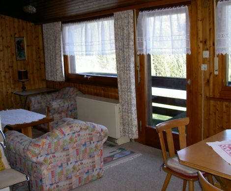
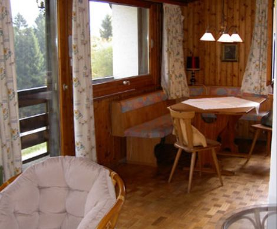


Die Ferienhäuser bieten einen gemütlichen Wohn- und Essbereich mit Küche, einen Eingangsbereich, einen Balkon sowie ein Badezimmer mit Dusche und WC.
Eine Treppe führt in den unteren Bereich mit zwei Schlafzimmern: ein Schlafzimmer mit Doppelbett und ein weiteres mit zwei Einzelbetten. Zusätzlich steht ein Keller zur Verfügung, der sich zum Beispiel ideal zur Aufbewahrung von Ski und anderer Ausrüstung eignet.
Sie sind mit dem Auto sehr gut erreichbar, und direkt vor den Häusern stehen Parkmöglichkeiten zur Verfügung.
Ausstattung
Wohnen
- 70 m²
- Keller- und Skiraum
- Garten
- Balkon
- Parkmöglichkeiten direkt vor dem Haus
- Zentralheizung
Küche
- Kaffeemaschine
- Elektroherd
- Kühlschrank
- Gefrierfach
- Backofen
Ess- & Wohnbereich
- Essbereich mit Eckbank
- Sitzmöglichkeiten für 6 Personen
- Wohnzimmer mit TV
Badezimmer
- 1 Badezimmer
- WC, Dusche
- Handtücher
Schlafzimmer
- Schlafmöglichkeiten für 4 Personen
- Schlafzimmer 1 mit einem Doppelbett
- Schlafzimmer 2 mit zwei Einzelbetten
- Bettwäsche
Geeignet für
- Für Kinder geeignet
- Haustiere erlaubt
- Langzeitmieter willkommen
- LGBTQ+ friendly
- Nicht barrierefrei
- Rauchen im Haus ist nicht gestattet
Gut zu wissen
Bettwäsche und Handtücher: auf Vorbestellung € 10,00 pro Person und Aufenthalt.
Endreinigung: wird von der vermietenden Person übernommen. Bitte hinterlassen Sie das Haus bei der Abreise ordentlich und besenrein. Dazu gehören das Spülen und Einräumen des Geschirrs, die Entsorgung des Mülls, ein kurzes Aufräumen sowie das Schließen der Fenster.
Lage & Anreise
Skilifte: 1 Kilometer
Nächste Bushaltestelle: 5 Gehminuten (350 Meter)
Nächster Bahnhof: Dornbirn in 12 Kilometer
Nächste Autobahnabfahrt: Dornbirn in 15 Kilometer
Nächste Einkaufsmöglichkeit: Schwarzenberg in 4 Kilometer
Auto: Empfohlen
Vorarlberg liegt als westlichstes Bundesland Österreichs an der Grenze von Deutschland, Schweiz und Liechtenstein. Schwarzenberg zählt zu dem Vorderbregenzerwald und ist in 5-10 Fahrminuten zu erreichen. Unser Ferienhaus befindet sich zwischen Schwarzenberg und Bödele auf 1100 m Höhe.
Sehen Sie sich die Lage auf Google Maps anAktivitäten & Ausflugsziele
Bei zahllosen Wanderungen können Sie das umliegende Bergpanorama das ganze Jahr genießen. Die umliegenden Orte des Bregenzerwalds laden den naturinteressierten Urlauber auf unzählige Ausflüge ein. Im Winter wird das Skifahren in sämtlichen Skigebieten im Bregenzerwald ein Hochgenuss. Natürlich gibt es nur wenige Minuten entfernt eine Skischule für Anfänger mit Garantie des Skifahrlernens. Im Sommer können Sie sich im kühlen Schwimmbad erfrischen. Genießen Sie den Urlaub in bester Bergluft in der Stadtnähe!
- Wandern
- Wintersport
- Mountainbiking
- Bergsteigen
- Skischule
- Sightseeing
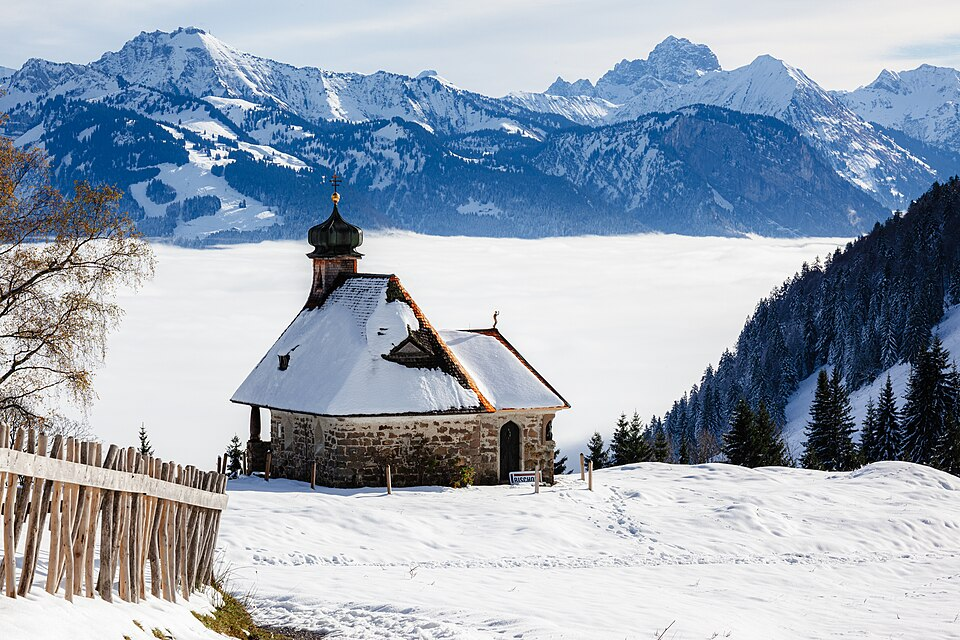
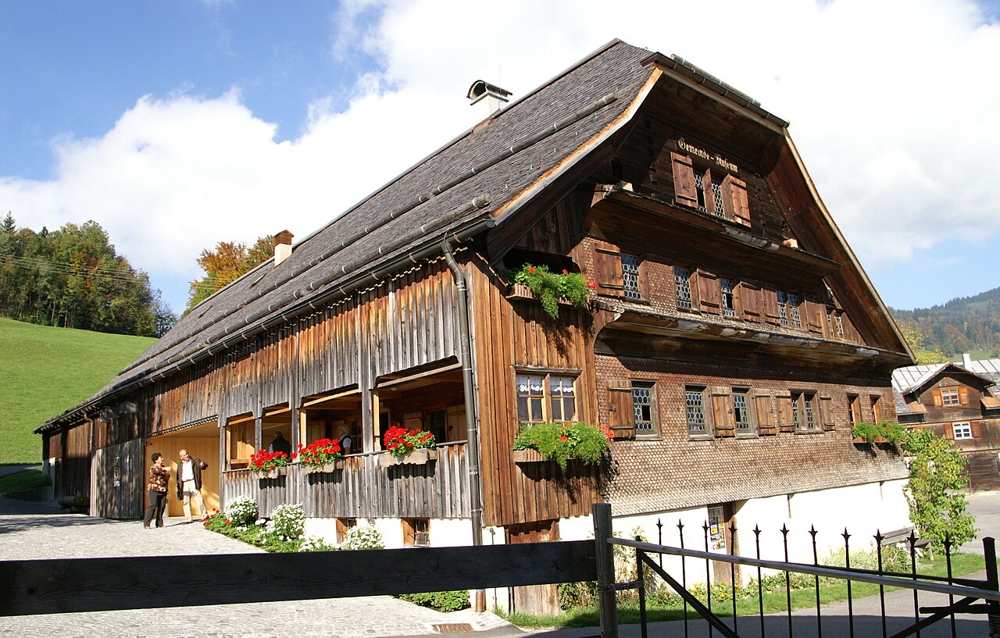
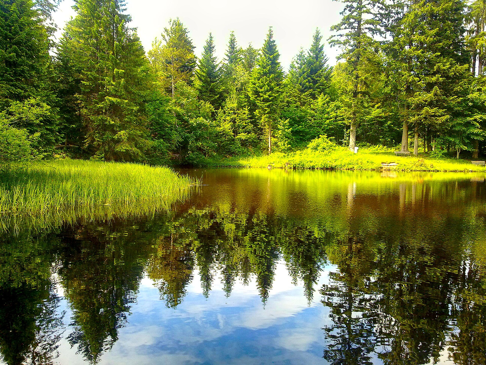
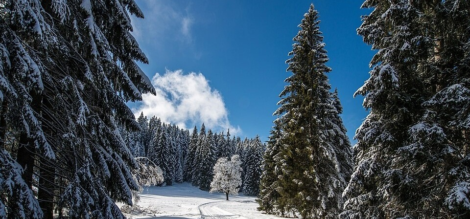
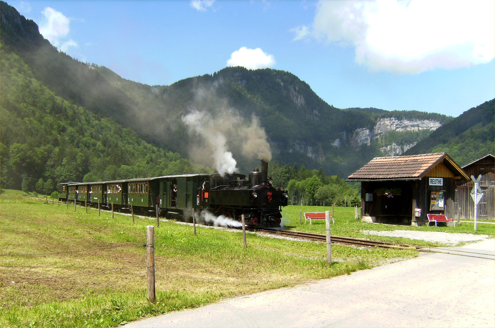
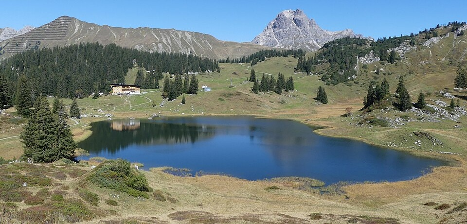
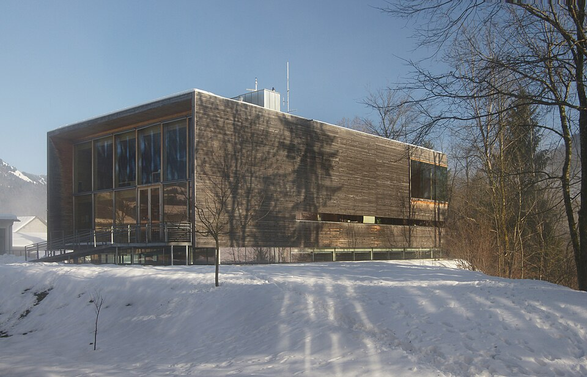
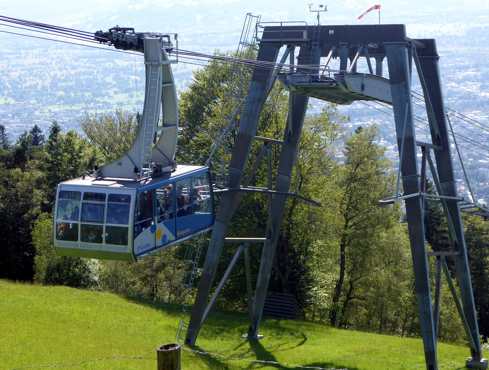
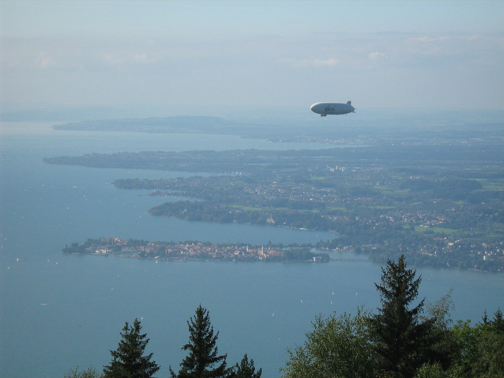
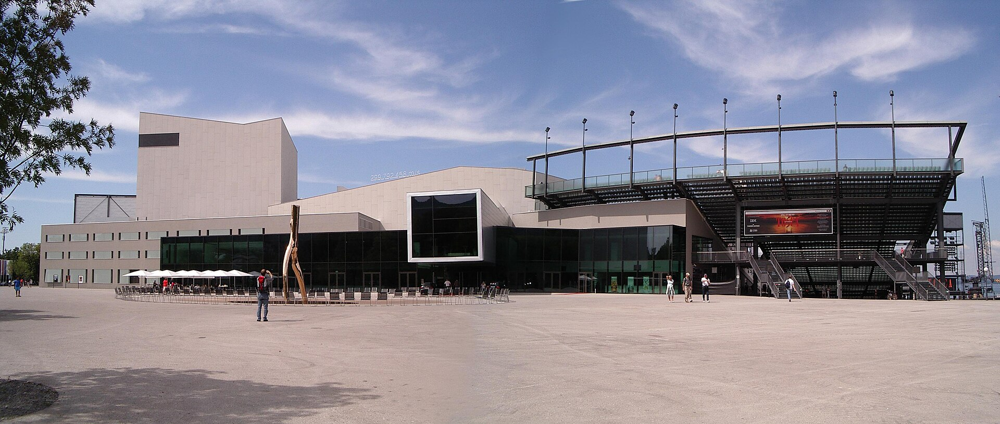
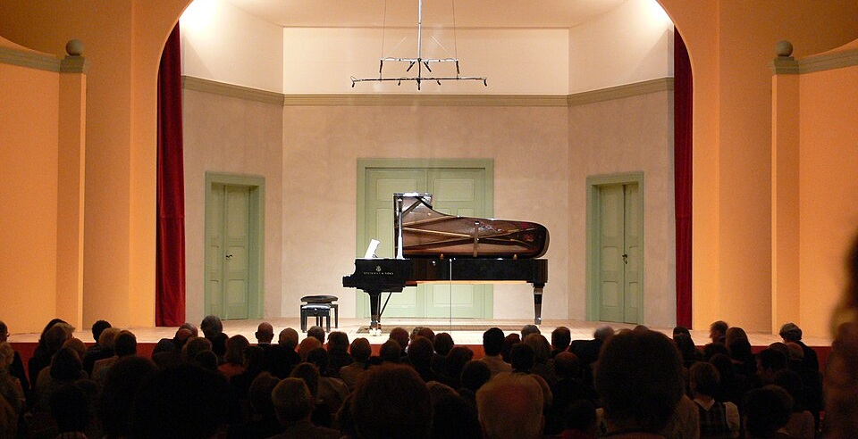
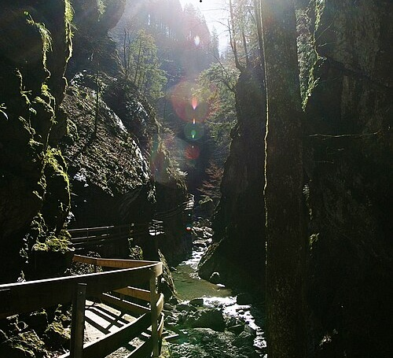
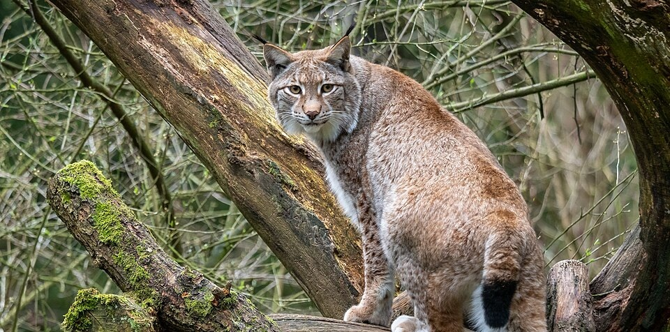